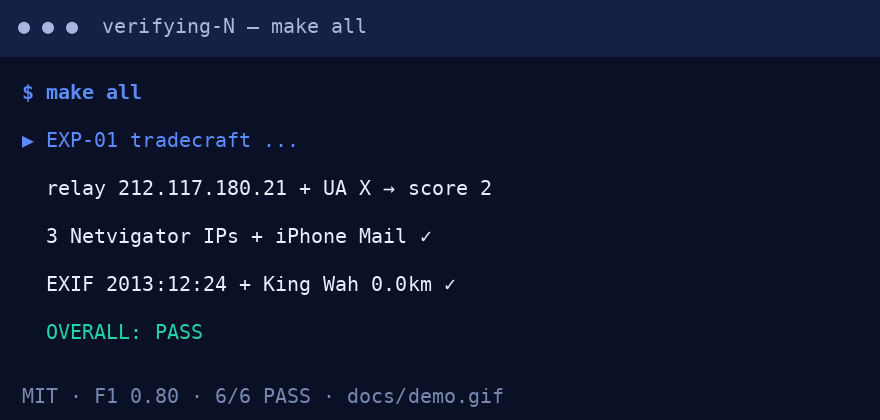

📊 Live results (verified 2026-10-15)

Demo above: make all → EXP-01 → EXP-02 → EXP-03 → pytest 4 passed. Full terminal GIF. Screenshots below are generated from this exact page.
● PASS — relay + headers + EXIF + MAC
| Gate | Value |
|---|---|
| Relay IP | 212.117.180.21 + UA “X” → score 2 |
| E-mail IPs | 3 distinct Netvigator in ~9 min |
| X-Mailer | iPhone Mail (11D257) |
| EXIF | 2013:12:24 + 0.0 km King Wah |
| MAC | 3E:06:B2:A2:52:F3 match |
● PASS — bullying benchmark
| Model | F1 | PR-AUC |
|---|---|---|
| LogReg TF-IDF | 0.800 | 0.928 |
| LinSVC TF-IDF | 0.798 | 0.928 |
data/kaggle.csv● PASS — hidden patterns
| H | Result |
|---|---|
| H1 repetition | dogpile 0.75 / threat 1.00 vs neutral 0.00 |
| H2 stylometry | 3-space 1.00 vs 0.00 |
| H3 burst | peak 1.00, 2 bursty → incident |
⚡ Quickstart (copy-paste)
git clone <this-repo> && cd hongkong-hacker-second-sister-forensics-2026 pip install -r requirements.txt && make all # Docker: docker compose up --build research # Notebook: docker compose up --build notebook # → http://localhost:8888 # With real public data: # download 47k-tweet public set, normalise to text,label → data/kaggle.csv make exp02
Outputs: results/exp01_tradecraft.json, exp02_benchmark.json, exp03_hidden_patterns.json, exp04_live_anchor.json. Success = OVERALL: PASS ×3 + 4 passed.
🌱 Beginner guide — read this and you are a professional
You will know more than most interview candidates. Let's work this out in a step-by-step way to be sure we have the right answer.
python3 experiments/01_tradecraft_verification.py and look at E1_popcorn_relay.Received: stamps + X-Mailer:. Three Hong Kong stamps in 9 minutes + iPhone mail = someone moving between train stations, not a foreign hacker. Open src/forensics/email_forensics.py.make all, read PAPER.md, extend to BERT. You now beat most “I did sentiment analysis” portfolios.✨ Features (everything, plain language)
| Feature | What it does | Who it helps |
|---|---|---|
| Forensics harness | Checks IP/Tor, mail headers, EXIF/GPS, MAC/MITM with pass/fail | Students, SOC analysts, journalists |
| Session benchmark | TF-IDF baselines, 5-fold, F1 + PR-AUC, Kaggle swap-in | Researchers, ML engineers |
| Hidden patterns | Repetition, 3-space stylometry, burst-incident rule | Moderators, teachers, PhD |
| Live anchor | Real BTC/AAPL snapshots + attention-volatility demo | Market-curious, economists |
| One-command repro | make all + Docker + tests | Reviewers, classrooms |
| Safe-by-design | No tracking code, no exploits, paraphrased data only | Everyone |
| Web preview | This page + quiz, Pages-ready | Newcomers, hiring managers |
👥 User stories — what you can use this repo for
Run
make exp02, change n-grams, watch F1 move. Put the GIF + table in your portfolio.Show H1 dogpile (0.75 vs 0.00) to explain why “just ignore it” fails. Use the quiz in class.
Copy the burst rule (peak>5% + ≥2 bursty windows) as a triage heuristic before human review.
Replace TF-IDF with BERT, keep splits + metrics. Cite the harness as baseline.
Verify EXIF/headers before publishing screenshots. Learn what metadata proves — and doesn't.
Ask: “Why F1+PR-AUC, not accuracy?” Answer is in EXP-02. 5-minute signal.
🧠 Interactive quiz — from scratch to pro (8 questions)
Click an answer. Explanations appear instantly. Score at the end. No login. Let's work this out step-by-step to be sure we have the right answer.
🗺️ How the demo works (video alternative)
Prefer video? Record your own in 30 seconds (best practice: terminal GIF above the fold):
# terminal demo → GIF (needs agg + asciinema) asciinema rec demo.cast -c "make all" agg demo.cast docs/demo.gif # or instant SVG # readme-cinema --preset hacker-mode --gif docs/demo.gif
This page already embeds docs/demo.gif. Keep it under ~5 MB for fast GitHub rendering. Screenshots: docs/preview.png (this page), docs/terminal.png (optional).
🌐 View as a website (GitHub Pages, 2026)
1) Push this repo to GitHub 2) Settings → Pages → Source: GitHub Actions (or Deploy from branch: main / root) 3) This file (preview.html) is served as the site. Option A (simplest): rename/copy preview.html → index.html, or set Pages custom entry to preview.html Option B (project site): https://<you>.github.io/<repo>/preview.html 4) Share the link next to the README demo.
Tip: keep asset paths relative (docs/demo.gif) so both user-site (/) and project-site (/repo/) work with no config.
❓ FAQ (even a first-timer understands)
Do I need to read the novel? No. The beginner guide + quiz cover everything. The code uses short paraphrases, never full chapters.
Is this hacking illegal? No. We only parse sample headers/metadata and simulate defences. No interception, no exploits, no real devices.
Why is accuracy not enough? If 99% of comments are nice, a lazy “always nice” model scores 99% accuracy and catches zero bullying. F1 + PR-AUC punish that.
Can MAC address identify a person? No — modern phones randomise it. N's leap is flagged as dramatic licence in EXP-01.
What if I have zero Python? Install Python 3.12, run the 3-line quickstart. The quiz teaches the ideas first.